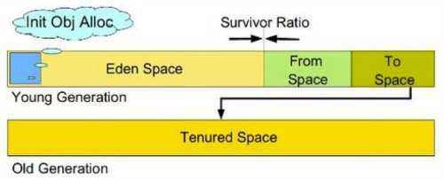

为什么需要了解垃圾回收机制？原因有两个：
内存溢出、内存泄露需要排查时
垃圾收集成为系统性能瓶颈时
垃圾收集的区域：
堆、方法区。
一、判断对象已死
垃圾收集一个很关键的问题是要找到哪些对象可以进行回收。也就是要确定哪些对象已经死去。
有两种算法来判断对象是否存活：引用计数法和可达性分析算法。
1，引用计数法
每一个对象中增加一个引用的计数，这个计数代表当前程序有多少个引用引用了此对象，如果此对象的引用计数变为0，那么此对象就可以作为垃圾收集器的目标对象来收集。
这种算法最大的问题是不能处理循环引用的问题。
比如A引用B，B引用C，C引用A。 ABC三个对象都无法回收。
2，可达性分析算法(GC Root)
Hotspot虚拟机使用的是可达性分析算法。
通过一系列的名为“GC Root”的对象作为起点，从这些节点向下搜索，当一个对象到GC Root没有任何引用链相连时，则该对象不可达，垃圾收集器将回收其所占的内存。
可作为GCRoot的对象包括以下几种对象：
1，java虚拟机栈(栈帧中的本地变量表)中的引用的对象。
2，方法区中的类静态属性引用的对象。
3，方法区中的常量引用的对象。
4，本地方法栈中JNI本地方法的引用对象。
3，对象引用
不管是引用计数法还是GC ROOT都需要用到对象引用。
引用主要有四种：
1，强引用（Strong Reference）
强引用是使用最普遍的引用。如果一个对象具有强引用，那垃圾回收器绝不会回收它。当内存空间不足，Java虚拟机宁愿抛出OutOfMemoryError错误，使程序异常终止，也不会靠随意回收具有强引用的对象来解决内存不足的问题。
2，软引用（Soft Reference）
如果一个对象只具有软引用，则内存空间足够，垃圾回收器就不会回收它；如果内存空间不足了，就会回收这些对象的内存。软引用可用来实现内存敏感的高速缓存。
下面举个例子，假如有一个应用需要读取大量的本地图片，如果每次读取图片都从硬盘读取，则会严重影响性能，但是如果全部加载到内存当中，又有可能造成内存溢出，此时使用软引用可以解决这个问题。
设计思路是：用一个HashMap来保存图片的路径和相应图片对象关联的软引用之间的映射关系，在内存不足时，JVM会自动回收这些缓存图片对象所占用的空间，从而有效地避免了内存溢出的问题。
3，弱引用（Weak Reference）
弱引用与软引用的区别在于：只具有弱引用的对象拥有更短暂的生命周期。在垃圾回收器线程扫描它所管辖的内存区域的过程中，一旦发现了只具有弱引用的对象，不管当前内存空间足够与否，都会回收它的内存。
4，虚引用（Phantom Reference）
“虚引用”顾名思义，就是形同虚设，与其他几种引用都不同，虚引用并不会决定对象的生命周期。如果一个对象仅持有虚引用，那么它就和没有任何引用一样，在任何时候都可能被垃圾回收器回收。
虚引用主要目的就是在这个对象被回收时受到一个系统通知。
方法区回收
方法区回收两类数据：无用的类、废弃的常量。
判断无用的类：
1，该类的所有实例都已经被回收，即java堆中不存在该类的实例对象。
2，加载该类的类加载器已经被回收。
3，该类所对应的java.lang.Class对象没有任何地方被引用，无法在任何地方通过反射机制访问该类的方法。
废弃的常量和堆种的对象非常类似，没有其他地方引用，有必要的话将会被回收。
二、垃圾回收算法
1，标记-清除算法
分为标记和清除两个阶段。
首先虚拟机停止所有的工作，开始标记处所有需要回收的对象；标记完成后统一回收。
主要缺点一是效率很低，二是标记清除后会产生大量不连续的内存碎片。
2，复制算法
复制收集器将内存分为两块一样大小空间，某一个时刻，只有一个空间处于活跃的状态，当活跃的空间满的时候，GC就会将活跃的对象复制到未使用的空间中去，原来不活跃的空间就变为了活跃的空间。
解决了效率问题和内存碎片问题。
但需要额外的空间消耗，总有一块内存不可用。
3，标记-整理算法
复制算法在存活率较高时，复制较多，效率会很低。
标记整理收集器汲取了标记清除和复制收集器的优点，它分两个阶段执行，在第一个阶段，首先扫描所有活跃的对象，并标记所有活跃的对象，第二个阶段首先清除未标记的对象，然后将活跃的的对象复制到堆得底部。
该算法极大的减少了内存碎片，并且不需要像复制算法一样需要两倍的空间。
4，分代收集算法
重点来了，hostspot虚拟机是采用的分代收集算法。
根据对象的存活周期的不同，把内存分成几块。根据每块的特点采用最合适的收集算法。
java堆主要被分为两块，新生代、老年代。

1,新生代(Young):
分三个区。一个Eden区，两个Survivor区。
大部分对象在Eden区中生成。
当Eden区满时，执行此区垃圾回收，还存活的对象将被复制到Survivor 1区（两个中的一个）；
当这个Survivor 1区满时，执行此区垃圾回收，回收后存活对象将被复制到另外一个Survivor 2区；
当这个Survivor 2区也满了的时候，执行此区垃圾回收，回收后存活对象将又被复制到Survivor 1区；
当对象多次从1区2区之间复制(默认15次)，并且还存活时，将被复制到老年代。
Survivor的两个区是对称的，没先后关系，所以同一个区中可能同时存在从Eden复制过来对象，和从前一个Survivor复制过来的对象，而复制到年老区的只有从第一个Survivor去过来的对象。而且，Survivor区总有一个是空的。
对于创建大对象时，如果新生代中无足够的连续内存时，也直接在老年代中分配内存空间。
Java虚拟机对新生代的垃圾回收称为Minor GC，次数比较频繁，每次回收时间也比较短。
新生代使用复制算法和标记-清除垃圾收集算法。
2,老年代(Tenured):
老年代存放的都是生命期较长的对象。
使用标记-整理垃圾回收算法。
老年代的垃圾回收叫Full GC，次数相对比较少，每次回收的时间也比较长。
Full GC一般伴随一次MinorGC。